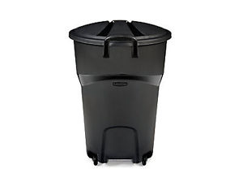
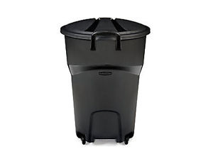

Hamilton介绍¶
百科，Hamilton官网¶
Hamilton各个区¶
Hamilton有6个区：Hamilton市区、Dundas、Ancaster、Stoney Creek、 Flamborough、Glanbrook。后面那5个地方可以理解为县。
Hamilton最主要的资源和人口都在Hamilton市区。Dundas有很多便宜的house和公寓；Ancaster有很多瀑布和美丽的风景；Stoney Creek离McMaster有些远，但在Hamilton考驾照只能去那；剩下的Flamborough和Glanbrook主要是农田和林场，和我们关系不大。

和我们关系最紧密的当然是Hamilton市区了。一个大的区又分为多个小的区，相当于国内的街道。
以McMaster University为中心，学校东边是Westdale，南边是Ainslie Wood，西边是University Gardens（原来叫University Plaza）。从租房的角度考虑，这些地方统称为Zone 1。
403高速以东就是Hamilton市区的Downtown了。其中最最中心和繁华的地方就在Kirkendall North、Beasley、Landsdale。如果大家想住在Downtown，那最好住在这一片。其它地方离McMaster太远，也不是特别安全。
Downtown和Zone 1以南是Hamilton的一座小山，山上是一大片平原。在山上有各种自助餐厅，Hamilton最大的Lime Ridge Mall商场和Walmart。即便如此，也希望大家一定不要住在山上，因为Zone 1和山上没有公交直达的道路，分界线恰是Hill最陡峭的地方。想从Zone 1到山上最近也得先绕到Downtown的Corktown或Stinson附近。
Hamilton的主干道¶
连通Hamilton downtown和McMaster最主要的道路就是Main Street了。Zoon 1区域里的Main Street是双向车道（绿色部分），而downtown部分的Main Street是向东的单行道（蓝色部分），向西的单行道则是King Street（红色部分），它在644 Main那个公寓的西边汇入Main Street。
所有的公交车也会受此影响，比如在downtown想坐车去McMaster，只能步行到King Street上的车站等车。在McMaster和downtown之间行驶的公交车有1（A line）、5（5A 5C 5E 51 52）、10路。
另外山上的道路以Upper James St和Upper Wentworth St为主。山上的南北方向的道路名称都非常有规律。比如某道路连通downtown和山上，downtown的名称是 XX St.，山上的名称就是 Upper XX St.。此外，山上南北方向的非主干道名称都是E XXth St.或W XXth St.。大家以后看到此类地址直接认为在山上就可以了。
时差和时区¶
大家都知道中国跨越5个时区，但统一使用北京时间，就是东8时区（+8）。而加拿大地理上跨越6个时区，并使用6个不同的时间：
我们所在的Hamilton位于-5时区，也就是东部时区（EST）
加拿大分冬令时和夏令时，在中国是没有夏令时的。
加拿大冬令时时段：11月1日~次年3月30日（每年会稍有变动），此时加拿大比中国晚13个小时。
加拿大夏令时时段：4月1日~10月30日（每年会稍有变动），此时加拿大比中国晚12个小时。
电子设备和电脑在第一次使用的时候会让你选所在地。大家一定要选对。这样系统会自动调整时间。
垃圾分类与回收¶
在Canada家庭产生的垃圾必须要分类，Hamilton也不例外。
在Hamilton，市政人员每周一（如果周一是节假日，则延后一天）上午会去各个house和公寓的门口收垃圾。这就需要大家在周末一定要把垃圾拿到门口（公寓就拿到指定的位置）。如果垃圾不分类，那市政人员是不会收走的。
垃圾大体分为3类：
①可降解的垃圾：比如剩饭剩菜果皮的厨余垃圾，house的枯枝落叶杂草等等，这类垃圾一般要倒在house或公寓的绿色的垃圾桶里。如果厨房用垃圾袋，则必须去超市买可降解的垃圾袋（也是绿色的）。否则市政人员不收。②可再利用的垃圾：就是瓶瓶罐罐，废纸盒，以及其它有recycle符号的包装袋。这类垃圾一定倒在house或公寓的蓝色的垃圾盒里。③不可降解不可回收的垃圾：这个则是要倒在黑色的垃圾桶里或倒在一个大的黑色的塑料袋里。垃圾袋没有数量和材质的要求。

 

每周回收的垃圾的量也有规定，各类垃圾都不能超过上图中的一桶或一盒。如果超量了，则超过的部分是不会收走的，这意味着你又要放一周。
大家一定要养成垃圾分类和及时倾倒的好习惯。尤其是住公寓的同学，公寓里的bedbug几乎都是垃圾处理不当造成的。